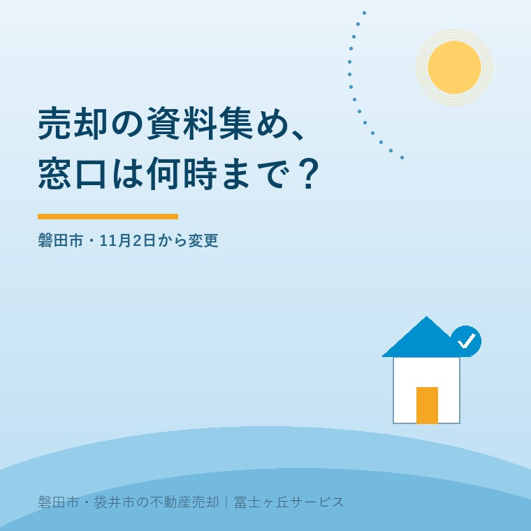
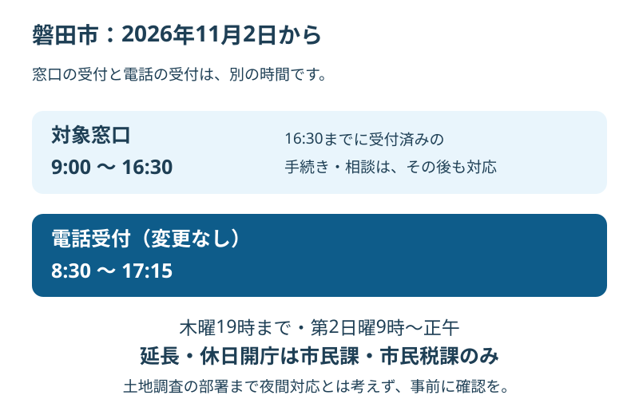

磐田市の売却資料集め、11月から窓口変更
2026年9月30日｜カテゴリ：地域・売却実務

この記事の要点
実家の売却資料を一日で集めたい。磐田市役所には何時に行けばいい？
磐田市の対象窓口は2026年11月2日から9時〜16時30分に変わります。電話受付は8時30分〜17時15分のままです。売却資料は担当窓口と取得条件を先に確認し、土地調査まで夜間対応と思い込まないでください。磐田市・袋井市・森町では、介護施設の運営から不動産事業を始めた富士ヶ丘サービスのような地域密着の会社に、資料整理から相談する選択肢があります。
大石浩之（磐田市／不動産業）です。遠方から実家へ帰る日に、市役所で売却の資料も集めたい。そんな予定を立てるなら、2026年11月以降は窓口の受付時間を組み直してください。職員が働いている時間と、窓口で受け付ける時間が分かれます。
この記事は、2026年9月24日更新の磐田市公式案内を9月30日に確認して書いています。変更は11月2日からで、9月30日現在は変更前です。書類を取りに行く日がどちらに当たるかを、最初に確かめます。
11月2日から窓口と電話の時間が分かれる
磐田市は、2026年11月2日月曜日から、対象窓口の受付を9時〜16時30分に変更します。電話受付と職員の勤務時間は8時30分〜17時15分のままです。電話がつながる時間でも、窓口では受付前・受付終了後となる時間帯があります。
対象施設は本庁舎、防災センター、西庁舎、各支所、iプラザです。申請、受付、問合せ、相談など、窓口で対応する全業務が対象とされています。証明書の申請だけ短くなる、と狭く受け取らない方がよい案内です。
| 2026年11月2日以降 | 受付時間 | 訪問前の注意 |
|---|---|---|
| 対象施設の窓口 | 9時〜16時30分 | 相談する業務と窓口を確認 |
| 電話 | 8時30分〜17時15分 | 電話時間は窓口時間と異なる |
| 16時30分までに受付済みの手続き | 受付時間後も対応 | 複数窓口を回れる保証ではない |
市は、16時30分までに受け付けた手続きや相談は、その後も対応すると明記しています。16時30分で相談を一律に打ち切るという案内ではありません。ただ、最初の窓口で受け付けてもらえれば、次の部署でも受付後に対応できるとまでは書かれていません。
私は、受付時間後の扱いと電話の時間を明示した点を評価します。遠方から動く家族が、何時までに何を終えるべきか考える材料になります。市は事務処理や職員間の情報共有などに時間を使い、市民サービスの向上につなげる方針も説明しています。
その上で、持ち主側として注文したいのは、資料ごとの窓口でも同じ案内が見つかることです。売却準備をする人は、市の組織からではなく「建物の資料」「土地の図面」から探します。私は一事業者として、入口が違っても受付時間までたどり着ける案内を望みます。

木曜夜間と日曜開庁は、全課共通ではない
磐田市の木曜日の19時までの延長は、市民課・市民税課のみです。第2日曜日の9時〜正午の休日開庁も同じ2課に限られます。土地や建物を調べるための部署すべてが夜間・休日対応する、という意味ではありません。
家族が仕事を休まずに行ける時間があっても、欲しい資料をその時間に扱っているかは別です。夜間に取得できる証明書を先に済ませ、土地や建物の相談を平日に置く、といった分け方を担当窓口に相談します。可能かどうかは書類ごとに確かめます。
私なら、電話では「木曜日は開いていますか」だけで終えません。取得したい資料の名前、実家の売却調査に使うこと、誰が来庁するかを伝えます。そのうえで、夜間の取扱いと必要書類を聞く。開庁しているという回答を、全業務対応の回答と取り違えないためです。
市の案内は、受付時間内の来庁がどうしても難しい場合、担当課へ対応可能か確認するよう案内しています。時間外対応を当然の権利として予定に入れることはできません。事情を伝え、回答を得てから移動の予定を決めます。
売却資料は、名前と取得目的から窓口を探す
不動産売却の資料集めでは、どの証明や図面が、何の確認に必要かを先に整理します。「売却に要る書類を全部ください」という頼み方では、必要な時期も取得先も揃いません。以下は私が勧める準備手順です。
最初に、仲介会社や登記を担当する司法書士へ、すでにある資料で足りるものと追加取得するものを聞きます。市役所で扱うものか、別の機関で確認するものかも分けます。市役所の窓口時間の変更を、法務局など別機関の時間変更と混同しないようにします。
| 確認したいこと | 訪問前に決める事項 |
|---|---|
| 建物の確認資料 | 資料名、対象建物、閲覧や交付の条件 |
| 土地の図面・調査成果 | 所在・地番、資料の有無、対応窓口 |
| 契約・登記に使う証明書 | 提出先、必要部数、発行時期 |
建物については磐田市で建築計画概要書を確認する準備を参考に、どの建物のどの資料を探しているかを言葉にします。資料が見つかるか分からない状態なら、「取得」より先に「有無の確認」という工程を置きます。
土地では磐田市の地籍調査成果の閲覧も確認の入口になります。地番や図面を手元に置いて問い合わせれば、生活上の住所だけで説明するより対象を伝えやすくなります。どの成果が必要かは、仲介会社や土地家屋調査士と相談します。
印鑑登録証明書のように提出先がある書類は、早く取ればよいとは限りません。磐田市の印鑑証明の取り方と11月変更も参照し、使う時期と必要部数を先に聞きます。本記事ではコンビニ交付の料金の詳説より、訪問を要する作業の整理に絞ります。
遠方からの一日を、資料の優先順位で組む
遠方から磐田へ来る日の予定は、窓口の受付時間に加えて、資料の確認に要する時間と移動を入れて組みます。市の案内は受付時間を示していますが、個々の売却資料がその日に必ず揃うと約束するものではありません。
私の提案は、相談や資料の有無の確認を午前に置き、交付だけで済むと確認できた手続きを後へ回す考え方です。もちろん予約などの条件があれば、担当窓口の案内を優先します。午前中に不明点が分かれば、家族へ資料の写真を送ってもらう余地も残せます。
ここは私にも迷いがあります。一日で済ませたい希望に合わせ、訪問先を詰め込みたくなるからです。しかし、受付終了直前まで予定を埋めると、窓口が一つ違っただけで組み直しになります。売却資料集めは、役所へ行けば何とかなるでは済まない。書類ごとに行き先と時間を決める。
例えば、実家の現地確認と役所での相談を同日に予定するなら、現地で長話になることも想定します。これは説明用の場面で、実際の相談事例ではありません。窓口でしかできない確認を先に置き、家族だけでできる写真整理を後へ回す方が、私は予定を守りやすいと考えます。
同行する家族にも、何を持ってくる役割かを一つずつ伝えます。本人確認の書類、代理で申請する条件、資料の受取り方法は窓口に確認する。家族だから何でも代わりに取れるという前提で出発しないようにします。必要条件は手続きごとに違います。
磐田の実家へ帰る前に、1本電話する
磐田市で実家売却の資料を集める家族が今日できることは、最初に行く窓口へ必要資料を確認する電話です。予定日が11月2日以降なら、新しい受付時間を前提に話し、対象の施設と担当窓口も確かめます。
私なら、電話のメモに「資料名・対象物件・受付場所・必要書類・予約・当日受取りの可否」の6欄を作ります。分からなかった欄は空欄のまま残します。全部を聞けなくても、窓口が違うと分かれば、それだけで無駄な移動を一つ減らせます。
電話で確認した日と担当部署も記録します。家族へ伝えるときは「市役所でできる」ではなく、「この資料を、この窓口で、この条件で確認する」と共有します。11月以降の予定を9月に組む場合、出発前に変更がないか再確認する余地も残します。
- 11月2日以降は窓口9時〜16時30分で予定を組む。
- 木曜延長・休日開庁の対象課と業務を確かめる。
- 資料名と取得目的をそろえて、訪問前に電話する。
私は、資料を集めたから売却を決めるようには案内しません。磐田・袋井の実家を残すにしても、家族が困らない段取りを先に整える価値があります。登記や相続に使う資料の要否と個別判断は、司法書士などの専門家に確認を。
よくある質問
実家と家族の判断に関する疑問を整理します。
- 2026年9月30日から窓口の時間が変わっていますか？
- 変更開始は2026年11月2日月曜日です。本記事の確認日である9月30日は変更前で、すでに短縮されたという案内ではありません。11月以降に実家売却の資料を集める予定なら、新しい9時〜16時30分を基に訪問順を考えてください。対象施設や相談内容、予約の要否は、訪問前に担当窓口へ確認します。
- 16時30分に手続きが終わらなければ帰るのですか？
- 磐田市は、16時30分までに受け付けた手続きや相談は、受付時間後でも対応すると案内しています。ただし、閉庁間際に到着すれば複数部署の資料が全部そろうという意味ではありません。別の窓口へ移る予定や不足書類がある場合も考え、必要な手続きごとに余裕を取ります。個別の所要時間は担当窓口へ確認してください。
- 木曜日の夜に土地の資料を全部集められますか？
- 木曜日の19時までの延長は、市民課・市民税課のみという案内です。第2日曜日の9時〜正午の開庁も同じ2課に限られます。建築や地籍調査など、土地調査に関係する部署まで延長するとは書かれていません。必要な資料名と用途を伝え、その窓口で扱う業務と受付時間を事前に確認してください。

この記事を書いた人：大石浩之（磐田市／不動産業・宅地建物取引士）
富士ヶ丘サービス株式会社。介護施設の運営から不動産事業を始め、磐田市・袋井市・森町で、介護と相続、実家の売却を一体で相談できる窓口を設けています。家族が困らない売却のため、資料と現地の条件を一件ずつ整理します。著者プロフィール
本記事は2026年9月30日時点の公開情報と筆者の意見です。制度・数値・手続き・契約条件は変更されることがあります。税務・登記・相続・契約などの個別判断は、税理士・司法書士・弁護士などの専門家に確認を。